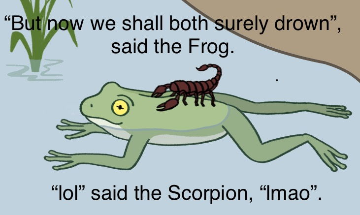
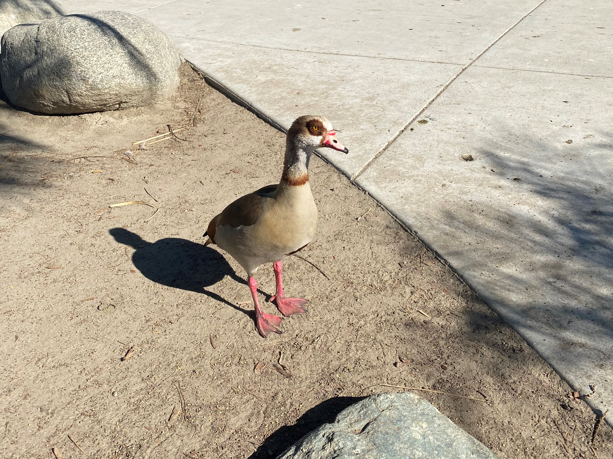
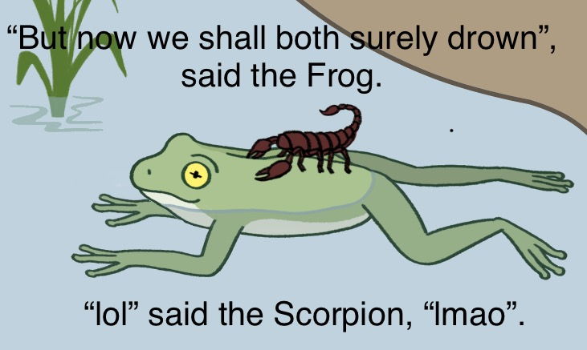
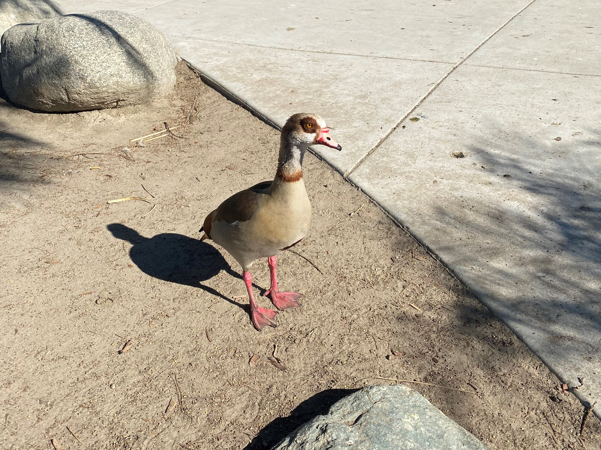

to•day's meme 
to•day's
build•ing
(an•a•heim, ca)

to•day's bird (e•gyp•tian goose) 
joe•y gua•da•gno
Hi. I'm Joey. This is my website. It's kind of a work in progress
right now, but it has some useful info.
The useful info: My name is Joey Guadagno. I am currently pursuing my M.Arch from Princeton SoA. Before that, I graduated from UCLA A.UD with a B.A. Architectural Studies in 2019.
email jpguadagno@gmail.com
twitter @_joey_joey_joey
instagram @itsonlyjoey
to•day's meme 
to•day's
build•ing
(an•a•heim, ca)
to•day's bird (e•gyp•tian goose) 